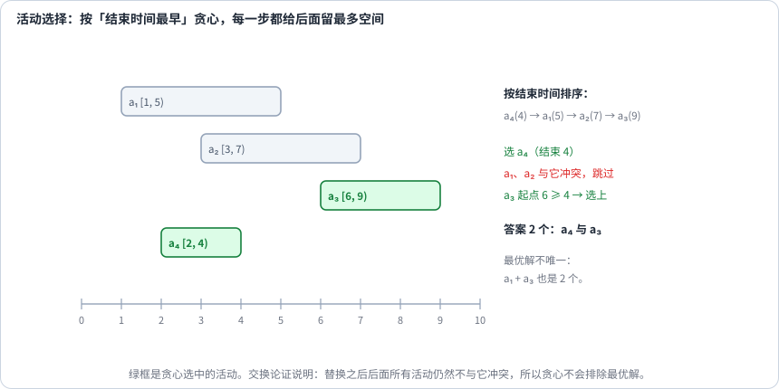
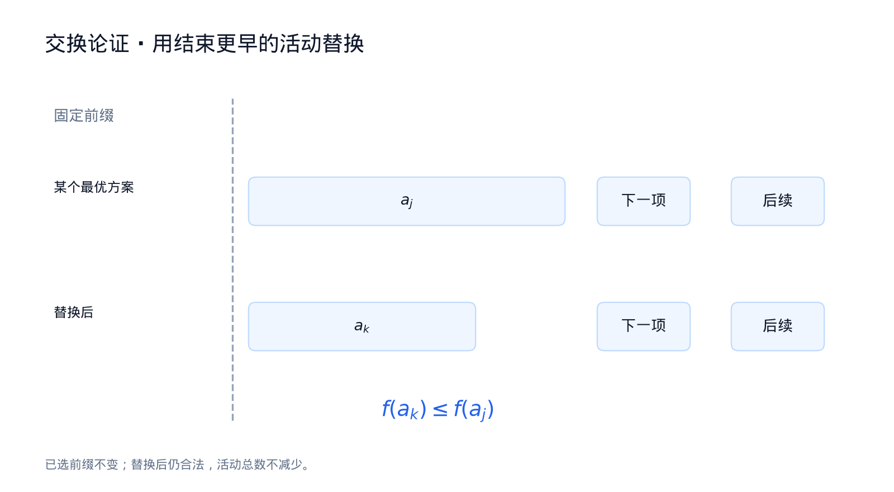

第 24 讲 · 贪心¶
阅读起点：第 22 讲：贪心反例；第 15 讲：分层（Jump Game II）。
首读范围：先掌握活动选择的交换证明；题库五模式逐个学，不一起背。
贪心算法的信条可以压成三行：
Make choices one-at-a-time.（一次只做一个决定） Never look back.（绝不回头） Hope for the best.（然后祈祷）
第三行是玩笑，但它说中了贪心最要紧的性质：贪心不回头修改已经确定的选择，通常仍会扫描或比较候选，然后确定当前最好的一项。 正因为如此，它的正确性必须被证明——否则你就真的是在祈祷。
这一讲的安排也照这个顺序来：先看一个贪心不成立的例子（无界背包），再看两个成立的例子（活动选择、任务调度）。之所以把贪心放到后面才讲，是因为证明它成立往往并不容易。
先看翻车的那个¶
切钢条也好，抓 tacos 也好，说的是同一件事："单位性价比最高的那个，尽管拿"这条推理是错的。
容量 10，五种物品：乌龟 (6, 20)、灯泡 (2, 8)、西瓜 (4, 14)、Taco (3, 13)、消防车 (11, 35)。单位重量最值钱的是 Taco，贪心于是抓 3 个：重量 9、价值 39。可换成 2 个 Taco 加 2 个灯泡，重量正好 10、价值 42——贪心输在"没给灯泡留位置"上。
病根在第 22 讲已经说过：贪心只顾眼前的性价比，不管剩下的空间还能不能被利用。 所以这类整数背包不能靠此比值策略保证最优，可用 DP；若允许任意分割物品，则是可按比值贪心的分数背包。这一讲真正的任务是找到那些贪心确实成立的问题，并学会怎么把它证明出来。
活动选择：从几个"看起来合理"的策略里挑一个¶

问题：有 n 个活动，活动 i 占据时间区间 \([s_i,f_i)\)。同一时刻只能做一个活动，问最多能做几个。
先拿一组数据试试：(1,5), (3,7), (6,9), (2,4)，答案是 2（可以选 (1,5) 与 (6,9)，也可以选 (2,4) 与 (6,9)）。
接下来的问题是：应该按什么顺序贪心地往里加活动？ 先比较几个常见候选策略：
| 策略 | 对吗 | 反例 |
|---|---|---|
| 选开始最早的 | ❌ | (1,10), (2,3), (4,5)：选了 (1,10) 只剩 1 个，最优是 2 个 |
| 选持续最短的 | ❌ | (1,4), (4,7), (7,10), (3,5)：选最短的 (3,5) 只能再选 (7,10)，共 2 个；而 (1,4),(4,7),(7,10) 可以拿 3 个 |
| 选结束最早的 | ✅ | —— |
这里采用“结束最早”。“给后面留时间”是直觉，下一节还需用交换论证确认它总正确；对称的“开始最晚，向前选”也可以成立。 四个活动排一下：(2,4), (1,5), (3,7), (6,9)。取 (2,4) 之后，(1,5) 和 (3,7) 都开了头，只剩 (6,9) 能接上——数量 2。
先解释排序这一行。每个活动写成 (开始时间,结束时间)，所以取第二项就是取结束时间。intervals.sort(key=lambda x:x[1]) 等价于先定义 def end_of(x): return x[1]，再调用 intervals.sort(key=end_of)；lambda 是这个小函数的简写，key 告诉排序比较哪个字段。sort 会原地修改 intervals，若要保留输入，可先复制列表。
def activity_selection(intervals):
intervals.sort(key=lambda x: x[1]) # 按结束时间升序
count = 0
last_end = float('-inf')
for start, end in intervals:
if start >= last_end: # 与已选的最后一个不冲突
count += 1
last_end = end
return count
扫描代码短，但关键是排序条件与下面的证明。已经按结束时间排好序时是 \(\mathcal{O}(n)\)，否则是 \(\mathcal{O}(n \log n)\)。
"我们从不排除最优解"¶
活动选择为什么对？比"举几个例子都对"更可靠的做法，是先立一条不变式：
只要贪心的每一步都不"排除"掉最优解，走到最后拿到的就一定是某个最优解。
下面把“仍然保留某个最优解”说具体：
先只看第一次选择：令g为结束最早的活动，某个最优安排按时间写成 \(o_{1},o_{2},\cdots ,oₘ\)。若g不是\(o_{1}\)，把\(o_{1}\)换成g。因为 \(\mathrm{end}(g)\le \mathrm{end}(o_{1})\le \mathrm{start}(o_{2})\)，g仍不与后面的活动冲突，活动数仍为m，所以至少存在一个以g开始的最优安排。
现在选了一个前缀，最后结束于E，只讨论start不小于E的剩余活动。当前g必须从这些活动中挑结束最早的；最优安排中的对应后缀也满足start不小于E。用同样的方法替换它的第一项，既不碰前缀，也不挡住更后面的项。这样每一步都保留某个包含全部已选前缀的最优安排。
例如最优安排先选(1,5)，贪心先选(2,4)，用后者替换前者，后续(6,9)仍能接；没有额外创造活动，也没有删掉后面的合法项。相反，若换成结束更晚的(1,10)，就可能撞上(6,9)，交换证明在这里失败。
最后没有可接的活动时，仍包含贪心前缀的最优安排也不可能再多一项，否则那一项就是可接候选。这才从“每一步有最优解与之兼容”推出“最终整个安排最优”。
交换论证要说明三个事实：替换哪一项、为何替换后仍合法、目标值为何不变差；只说“结束早留空间”还没完成证明。

虚线左侧的已选前缀保持不变；右侧是剩余问题。用当前结束最早的活动 \(a_k\) 替换最优剩余安排的第一项 \(a_j\)，后面的活动仍能接上，活动总数也没减少。
第二个成立的例子：任务调度¶
再看一个更贴近生活的场景：
有 n 个任务，任务 i 需要 \(t_{i}\) 小时；只要它还没做完，每小时都要付 \(c_{i}\) 的罚金。请安排一个顺序，使总罚金最小。
例如睡觉需 10 小时、每小时罚 2，作业需 8 小时、每小时罚 3。先作业再睡觉：作业在第 8 小时完成、睡觉在第 18 小时完成，总代价 \(8\times 3+18\times 2=60\)；反过来为 \(10\times 2+18\times 3=74\)。默认所有任务现在都可开始、不能中断、一次只做一项，且每项所需时间为正、每小时罚金非负。
先看"任意两项谁先做"。设 A 需要 x 小时、每小时罚 z，B 需要 y 小时、每小时罚 w：
最后一行说明：真正重要的不是总时间，也不是单位时间的罚金，而是两者的比 \(c/t\)。 所以贪心策略是"每次挑剩余任务里 \(c/t\) 最大的那个"，证明手法与活动选择完全相同——用的是同一套归纳：假设贪心选了 B 而它不在最优解的第一位，那么把 B 与它前面那个任务交换，"其他什么都不变，而我们已经证明代价不会变大"，反复交换直到 B 排在第一位。同一个论证换一道题，这就是这套框架的价值。
那什么时候可以贪心¶
那么，一般来说什么时候适合贪心？ 答案是：还需要证明当前局部选择能与某个全局最优解兼容；仅有最优子结构不足以保证贪心，背包就有最优子结构。
一个更实用的判据是这句问话：
做了这个贪心选择之后，剩下的问题里还留着某个最优解吗？
活动选择（结束最早）留得住；无界背包（比值最高）留不住。面试里与其说"感觉这样最好"，不如把这句话说出来，再补上交换论证的三步。
题库里的五个贪心模式¶
下面用 NeetCode 贪心模块中的六道题演示五种常见思路；后面的题表另列 Hand of Straights、Merge Triplets 作为延伸，不把它们强行套进这五类。
一、最大子数组和：决定延续还是重新开始¶
给定非空整数数组 nums，选一段非空连续子数组，返回最大元素和。例如 [-2,1,-3,4,-1,2,1,-5,4] 的最佳连续段是 [4,-1,2,1]，返回 6。允许负数，但不能选空段。
令 cur 为“必须以当前元素结尾的最大子数组和”，best 为“所有已考虑结尾中的最大值”。新元素 x 到来时，要么单独开一段 x，要么接在上一步的最佳结尾后面；比较 x 与 cur+x 即可。这也是一种只需保存一个结尾状态的动态规划：
def max_subarray(nums):
best = cur = nums[0]
for x in nums[1:]:
cur = max(x, cur + x) # 要么接上前面，要么从自己重新开始
best = max(best, cur)
return best
"重新开始"的依据：一旦 cur < 0，它对未来只有拖累。注意 best 和 cur 都要初始化成 nums[0]——数组可能全是负数。
二、跳跃游戏：维护最远可达下标¶
输入非空非负整数数组 nums，起点在下标 0；从位置 i 可向右跳 1 到 nums[i] 步，也可以在到达终点后停止。Jump Game 问能否到达最后一个下标，返回布尔值。例如 [2,0,0] 可从 0 直接跳到 2，返回 True；[1,0,1] 到下标 1 后无路可走，返回 False。
只从已可达的位置向外扩展，farthest 记录目前能到达的最右位置。因为可跳长度包含较短步长，0..farthest 内的位置都可达；遇到 i>farthest 才说明出现无法跨越的断点。
def can_jump(nums):
farthest = 0
for i, step in enumerate(nums):
if i > farthest: # 到不了这里
return False
farthest = max(farthest, i + step)
return True
Jump Game II 保留相同跳跃规则，另保证终点可达，改问最少需要几跳，返回次数；单元素数组已经在终点，答案为 0。此时只知道最远位置还不够，还要区分它是多少跳以内到达的。end 标记当前跳数覆盖到的边界，扫描完这一层才增加一次跳数：
def jump(nums):
"""题目保证终点可达；最少跳跃次数：把"最远可达"理解成一层一层向外扩展（BFS 的视角）"""
jumps = end = farthest = 0
for i in range(len(nums) - 1):
farthest = max(farthest, i + nums[i])
if i == end: # 走到当前这一层的边界，就必须再跳一次
jumps += 1
end = farthest
return jumps
循环只到倒数第二个位置：走到最后一格已经抵达终点，不需要再起跳。如果把最后一格也纳入 \(i=\mathrm{end}\) 的判断，会凭空多计一次。例如 nums=[0] 时循环执行零次，正确返回 0；不能在终点再计一跳。
以 [2,3,1,1,4] 为例：第一次跳后最远能到下标 2；扫描第一层的下标 1、2，它们下一跳最远能到 4。因此到达 4 至少要两跳，也确实能以 0→1→4 两跳到达。end 是当前跳数能覆盖的右边界，farthest 汇总“再跳一次”的最远位置；扫描到 end 才增加跳数。
为什么这不需要真的写一个 BFS？ 因为可达位置始终是一段连续区间，所以"一整层"可以用一个右边界表示。
三、加油站：先排除不能出发的一段¶
n 个加油站沿环路排列。到达站 i 可以得到 gas[i] 升油，从 i 开到下一个站需要 cost[i] 升，最后一站再回到 0。油箱容量无限，但出发时为空。要求找一个能沿固定方向绕完整圈的起点，返回下标；不存在则返回 -1。两个数组等长且非空，元素非负。
例如 gas=[2,0,2]、cost=[1,2,1]：从 0 出发会在离开 1 前断油；从 2 出发，经过 2、0、1 后能回到 2，返回 2。每站净增加量 diff=gas[i]-cost[i]，total 累计整圈净油量，cur 累计从当前候选起点以来的余额。
def can_complete_circuit(gas, cost):
total = cur = start = 0
for i in range(len(gas)):
diff = gas[i] - cost[i]
total += diff
cur += diff
if cur < 0: # 从 start 出发到这里断油了
start = i + 1 # 起点必须更靠后
cur = 0
return start if total >= 0 else -1
total 回答"整体有没有解"，cur 用来定位起点。令从当前候选起点 i 到位置 k-1 的净油量为 P。因为这是第一次断油，所有 k不大于j 都有 P不小于0；而从 i 到 j 的总净量为负，所以从 k 到 j 的净量等于“负数-P”，仍为负。因此 i..j 都可排除。该证明依赖“首次失败”，不能对任意 i、j 直接套用。
total不小于0 为什么足够？每次失败后重启，相当于选在累计净油量的新最低点之后。设最终起点为 start，从它到末尾的每段前缀和都非负；绕回开头走到任意 j<start 时，油量等于 total 加上“全局前缀和到 j”减去“全局前缀和到 start-1”，后两者之差也非负。所以整圈都能走通。这里假定 gas、cost 等长且非空。
四、划分字母区间：确定一段最早在哪里结束¶
输入字符串 s，要求把整串切成尽量多的连续片段，使每种字符只出现在其中一个片段里，返回各片段长度。例如 "abac" 只能把两个 a 放在同段，最细可切成 "aba"|"c"，返回 [3,1]。
先记录每个字符最后出现的下标 last。当前片段每遇到字符 c，右端点至少要扩展到 last[c]，否则这个字符会落在两个片段里。扫描到这个最远要求的位置时，才可以结束当前段：
def partition_labels(s):
last = {c: i for i, c in enumerate(s)}
res = []
start = end = 0
for i, c in enumerate(s):
end = max(end, last[c]) # 右边界只会变大
if i == end: # 走到边界，可以切一刀
res.append(end - start + 1)
start = i + 1
return res
为什么"走到 end 就能切"？ 不能更早——end 之前还有字符会在后面出现；也不必更晚——已经出现过的字符在 end 之后都不再出现。"最早不能早、最晚也不必晚"，就是贪心成立的标志。
五、带星号的括号：同时保留一段可能状态¶
输入只含 (、)、\(*\) 的字符串，每个 * 可以独立解释为左括号、右括号或空串。问是否存在一种解释，使整个字符串括号匹配，返回 True/False。例如 "(*)" 可把 * 当空串，"(*))" 可把 * 当左括号；"*(" 无论怎样解释都不合法。
若逐个尝试每个星号的三种解释，会产生大量分支。先看没有星号时：扫描前缀，只需数“尚未匹配的左括号”，该数不能为负，结束时必须为 0。有星号后可能同时有多个计数，我们用 lo、hi 记录其中最小和最大值，下面会解释为何中间整数也都可达。
def check_valid_string(s):
lo = hi = 0 # 未匹配左括号数的可能范围 [lo, hi]
for c in s:
if c == '(':
lo, hi = lo + 1, hi + 1
elif c == ')':
lo, hi = lo - 1, hi - 1
if hi < 0:
return False
else: # '*'
lo, hi = lo - 1, hi + 1 # 当成 ')' 则 lo−1，当成 '(' 则 hi+1
lo = max(lo, 0)
return lo == 0
先用集合想：每个前缀之后，未匹配左括号数可能不止一个。若原来可能值恰为整数区间 [lo,hi]，遇 ( 就整体加 1；遇 ) 就整体减 1，再丢弃负值；遇 * 则把每个可能值分别减 1、保持、加 1，三个相邻区间的并仍连续。若 hi<0，一个合法状态都不剩；否则把 lo 截到 0。空前缀从 [0,0] 开始，归纳可知这两个端点完整保存了所有可能。最后 lo=0 才表示存在全匹配的方案。
这一题不太一样：它维护的不是"一个状态"，而是"一堆可能状态的区间"。因为"未匹配的左括号数"的取值是连续的一段，两个端点就能完整描述这个集合，于是 \(3^{n}\) 的枚举被压成了 \(\mathcal{O}(n)\)。
手工推两个例子¶
活动选择：(1,5), (2,4), (3,7), (6,9)，按结束时间排成 (2,4), (1,5), (3,7), (6,9)。
| 活动 | 选不选 | 理由 | last_end |
|---|---|---|---|
| (2,4) | ✅ | 第一个 | 4 |
| (1,5) | ❌ | 1 < 4，冲突 | 4 |
| (3,7) | ❌ | 3 < 4，冲突 | 4 |
| (6,9) | ✅ | 6 不小于 4 | 9 |
答案 2。注意最优解并不唯一：这里选出的是 (2,4) 与 (6,9)，而另一组同样最优的解是 (1,5) 与 (6,9)——解不唯一，但数量唯一。
Partition Labels：s = "ababcbacadefegdehijhklij"。
start=0 开始扫：'a' → end = max(0, last['a']=8) = 8
'b' → end = max(8, last['b']=5) = 8
…… 扫到 i=8 时 i == end → 切出长度 9
下一段从 9 开始：'d' → end = 14；'e' → max(14, 15) = 15；i=15 时切出长度 7
最后一段：'h' → 19；'i' → 22；'j' → 23；i=23 时切出长度 8
答案 [9, 7, 8]
它在题库里长什么样¶
| 题目 | 贪心模式 | 关键论证 |
|---|---|---|
| Maximum Subarray | 维护当前最优 | 负前缀只会拖累 |
| Jump Game | 最远可达 | 可达位置是连续区间 |
| Jump Game II | 最远可达 + 分层 | 下界论证 |
| Gas Station | 全局记账 | 反证法 |
| Hand of Straights | 排序 + 分组 | 选择唯一，贪心自动成立 |
| Merge Triplets | 逐维筛选 | 取 max 满足交换律 |
| Partition Labels | 最远边界 | "不早不晚" |
| Valid Parenthesis String | 维护状态区间 | 状态集合是连续区间 |
从讲义走到代码¶
最多参加几场不冲突活动可按结束时间贪心；若每场有不同收益，就要重新考虑模型。
先独立写四个活动的选择程序，答案应为 2，并用一次交换解释为什么能先选 (2,4)。再做 Jump Game，记录每一步 farthest，而非试着枚举每种跳法。
[3,2,1,0,4] 应为 False，[2,3,1,1,4] 应为 True。接着做 Jump Game II，后一例最少 2 跳；end=2 表示“一跳能到的最右边”，不能当作下一跳必须落在 2。
练习¶
1. 有人对无界背包提出这样的推理："取价值/重量比最大的物品、能塞几份塞几份。"这个推理对吗？请给出反例。
不对。容量 10，物品 (6, 20) 与 (5, 12)：贪心取 1 个 (6,20) 剩 4 装不下，价值 20；最优取 2 个 (5,12) 装满，价值 24。根本原因是贪心忽略了"剩余空间能否被利用"。
2. 对活动选择提出这样的策略："每次选一个不被先前选择阻挡、且结束时间最早的活动。" 这个推理对吗？
是对的（与上面的贪心完全一致）。有意思的是，两题用的是同一种推理方式，一题对、一题错——这说明推理本身的"样子"不能作为正确性的依据，必须逐题证明。 证明见上文"我们从不排除最优解"那一节的交换论证。
3. "每次选持续时间最短的活动"为什么不行？
反例 (1,4), (4,7), (7,10), (3,5)：最短的是 (3,5)（长度 2），选它只能再选 (7,10)，共 2 个；而 (1,4), (4,7), (7,10) 能拿 3 个。"短"不等于"给后面留的空间最大"，真正起作用的是"结束得早"。
4. 为什么"活动选择"能用贪心，"无界背包"不能？
活动选择满足"贪心选择不会排除最优解"：结束最早的活动给后面留的空间最大，替换总是安全的。背包不具备这个性质——选一个高价值的物品可能让剩余容量碎掉，反而丧失更好的组合。判据就是那句问话："贪心之后，剩下的解空间里还有最优解吗？"
5. 把活动选择的交换论证写完整。
取一个与已选前缀兼容的最优安排；找它剩余部分的第一项；用当前结束最早的可选活动替换；说明前缀与后缀仍合法、活动数不减，再对剩余部分重复。
6. 任务调度里，为什么真正决定顺序的是 \(c/t\) 而不是 t 或者 c？
因为"两个任务交换顺序"的代价差恰好是 \(wx-yz\)，"A 先做更好"等价于 \(w/y \le z/x\)。只有比值进入判断式，所以按 \(c/t\) 从大到小排。 推导见上文（Cost(A 先) 与 Cost(B 先) 的对比）。
7. Gas Station 里，为什么从某点出发失败后可以直接从下一个位置重试？
从当前候选 i 出发，在 j 第一次断油。对任意 i<k不大于j，从 i 到 k-1 的净油量 P不小于0，而从 i 到 j 的总净油量为负。从 k 到 j 的净油量是“这个负数-P”，仍然为负，所以 k 也失败。这是跳过整段候选的理由。
8. Partition Labels 里为什么"走到当前右边界就能切"？
不能更早：end 之前还有字符会在后面出现，提前切会割裂同一个字母；也不必更晚：已出现过的字符在 end 之后都不再出现。"最早不能早、最晚也不必晚"就是判据。
9. 实现 max_subarray(nums)，并说明为什么 best 与 cur 都要初始化成 nums[0]。
数组可能全是负数，正确答案是其中最大的那个负数；如果初始化为 0，全负数组会错误地返回 0。
10. 实现 jump(nums)，并说明为什么不需要真的做 BFS。
因为"可达位置"始终是一段连续区间，所以"一层"可以用一个右边界表示，不需要队列。见上文代码。
11. 实现 partition_labels(s) 与 check_valid_string(s)。
见上文"维护状态区间"那一段的代码。注意 partition_labels 里的顺序：先更新 end、再判断 \(i = \mathrm{end}\)，反过来会切错。
12.（接第 25 讲） 气球的水平范围由闭区间表示，一支箭选定横坐标 x，可射中所有包含 x 的区间。求射中全部气球所需的最少箭数，并说明它和活动选择的关系。
按右端点排序后贪心，都先按右端点排序，但射箭需要自己的交换证明：最早结束区间必被某支箭射中，把这支箭移到它的右端点，不会丢掉原先被它射中的剩余区间。具体证明见第 25 讲。"不重叠"的判据是 \(左端点 > 上一支箭的位置\)（端点相切时一箭可以穿透两个）。